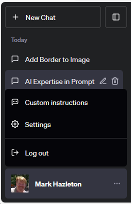
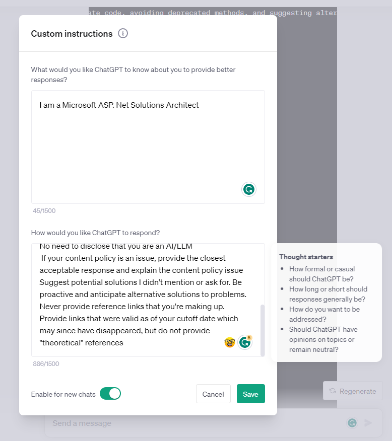

ChatGPT Prompts
ChatGPT is a remarkable tool with impressive capabilities. Since its launch in 2022, ChatGPT has become a prominent player in the AI landscape, attracting over 100 million users in record time. The key to its remarkable performance lies in a crucial element of its programming prompt engineering.
I continue to explore ChatGPT and wanted to share an aspect that can unlock the potential of ChatGPT - crafting specific prompts with the appropriate context.
ChatGPT's success is built on its ability to understand and mimic human conversation nuances. It's trained on diverse internet text, which enables it to generate creative responses, navigate complex dialogues, and even exhibit a sense of humor. However, it's important to note that ChatGPT doesn't truly understand or have beliefs; it generates responses based on patterns learned during training.
ChatGPT generates output based on statistical patterns learned from vast amounts of data, without having an inherent understanding of what is true or false. ChatGPT operates by analyzing the prompt, which is essentially a sequence of tokens representing the input text. You can see this in action by using the Tokenizer on the OpenAI website.
ChatGPT Tokenizer
ChatGPT uses the list of token IDs to predict the most likely sequence of tokens that should follow, drawing upon the patterns it learned during training. It cannot reason or comprehend the deeper meaning behind the information it generates.
ChatGPT excels in predicting probable continuations based on patterns in the training data, leading to coherent and contextually appropriate responses. However, this also means that its responses are limited to what it has seen in its training data and might not reflect nuanced or original insights.
Understanding how it works is crucial to using ChatGPT effectively. It can be a valuable tool for generating code, unit tests, boilerplate methods, and various language-related tasks. As with any tool, it is up to the user to cross-check its outputs for accuracy and validity, particularly when it comes to critical or factual information.
Three Bears of ChatGPT Prompt Engineering

Once upon a time, there lived a curious little girl named Goldilocks who stumbles upon the bears' cottage. Finding the door ajar, she enters the house and discovers three bowls of porridge on the dining table. She tries each one but finds Papa Bear's porridge too hot, Mama Bear's porridge too cold, and Baby Bear's porridge just right. Hungry from her adventure, Goldilocks devours all the porridge from Baby Bear's bowl.
Just like Goldilocks seeking the perfect porridge, finding the right amount of context in your ChatGPT prompt is essential for the best results.
- Papa Bear
-
Pappa Bear teaches us the perils of too little context; brief and ambiguous prompts often leave the AI confused, resulting in irrelevant or nonsensical responses.
Temperature?
- Mama Bear
-
Mama Bear shows us the consequences of overwhelming the AI with too much context; the poor ChatGPT struggled to sift through the information, leading to verbose and off-topic answers.
In the cozy little cottage on the hill, where the fireplace crackles and the night is chilly, what is the optimal temperature for the porridge to warm our souls and tummies?
- Baby Bear
-
Baby Bear reveals the secret to prompt-writing success. By providing just the right amount of context; clear, concise, and relevant prompt, ChatGPT could produce responses that were accurate, insightful, and engaging. Much like Baby Bear's perfectly sized chair, these prompts fit ChatGPT just right, enabling it to understand the user's intent and deliver the desired outcome.
What is the optimal temperature for baby bears to eat porridge?
So take a lesson from the Three Bears. Avoid being too vague or overwhelming with your prompts. Instead, strike the Goldilocks balance; not too little, not too much, but just the right amount of context to get the point across and achieve the best results for you. Embrace the magic of perfectly crafted prompts, and watch as ChatGPT responds with charm and intelligence, making your AI-powered conversations truly enchanting.
Improving ChatGPT Prompt Crafting
- Use Clear Language
- Be explicit about your requirements and expectations in the prompt. This helps ChatGPT understand your intent accurately.
- Be Concise
- You do not have to write a full set of requirements. Avoid overly complex or lengthy prompts. Clear and concise instructions result in more relevant responses.
- Iterate and Experiment
- Not every prompt gives you what you need the first time. Don't hesitate to iterate and experiment with different prompts to fine-tune ChatGPT's outputs for your specific use case.
- Be Specific to C#
- Ensure that your prompt explicitly mentions that you're looking for answers related to C# development. For example: "Provide examples of exception handling in C#."
- Include Code Samples
- When seeking code-related information, include code snippets in the prompt to make it clear that you want code-based responses. For instance: "Write a C# function to reverse a string using recursion."
- Clarify the Objective
- Clearly state what you want to achieve with the response. For instance: "Explain the differences between abstract classes and interfaces in C# and when to use each."
- Ask for Best Practices
- Request advice or best practices on specific C# topics. For example: "What are the best practices for optimizing performance in C# applications?"
- Problem-Solving Scenarios
- Pose real-world development scenarios and ask for solutions. For example: "You have a list of objects in C#. How would you filter out elements based on a specific condition?"
- Compare and Contrast
- Request comparisons between different C# features or concepts. For instance: "Compare the use of ArrayList and List in C# collections."
- Debugging Challenges
- Create prompts that ask for debugging help with specific C# code issues. For example: "Identify and fix the error in this C# LINQ query."
- Explore Advanced Features
- Encourage exploration of more advanced C# topics. For instance: "Demonstrate how to implement a custom attribute in C#."
- Discuss Design Patterns
- Request explanations or implementations of design patterns in C#. For instance: "Provide an example of the Singleton design pattern in C#."
I believe that mastering the art of crafting prompts is pivotal in harnessing the true potential of ChatGPT. By providing clear instructions and relevant context, we can leverage the tool to make us better developers.
Prompt Engineering
Prompt Engineering is the art of crafting precise, effective prompts to guide AI models like ChatGPT toward generating cost-effective, accurate, useful, and safe outputs. It's not confined to text generation but has wide-ranging applications across the AI domain. Prompt engineering is essential for creating better AI-powered services and obtaining superior results from existing generative AI tools.
Prompt engineers play a vital role in optimizing AI models' efficiency and cost-effectiveness. They can access AI models like GPT-4 through OpenAI's API or ChatGPT, both of which have different cost structures. Parameter tuning is also essential, allowing prompt engineers to improve the quality and accuracy of responses.
Prompt design involves creating the perfect prompt for a language model to achieve a stated goal. It considers the model's nuances, domain knowledge, and quality measurement. Prompt engineering extends this to include designing prompts at scale, tool integration, workflow planning, prompt management, evaluation, and optimization.
- Prompt Placement and Description:
- Placing instructions at the outset and being specific about context improves responses.
- Persona Pattern:
- AI can function from specific perspectives or roles, enhancing responses.
- Introducing New Information:
- You can introduce new information via prompts to the model.
- Prompt Size Limitations:
- Understanding token limitations is crucial for concise prompts.
- Prompts for Repeated Use:
- Reusing or refining prompts maintains context in conversations.
- Question Refinement Pattern:
- AI can help refine questions for more accurate results.
- Cognitive Verifier Pattern:
- Complex questions can be broken down into manageable sub-questions for more comprehensive answers.
- Few-Shot Prompting Approach:
- Teaching AI models through examples before asking questions is a powerful technique.
- Chain-of-Thought Prompting:
- Interconnected prompts guide AI models to reasoning and nuanced responses.
Developers use prompt engineering to enhance AI models' understanding and response to prompts. The ChatGPT API offers various hyperparameters for refining responses, including Temperature, Maximum Length, Stop Sequences, Top P, Frequency Penalty, and Presence Penalty.
- Customer Support and FAQ Generation:
- AI-powered chatbots use prompt engineering to provide personalized and relevant responses to customer inquiries.
- Content Creation and Marketing:
- Prompt engineering enhances content creation by guiding AI models to generate high-quality content.
- Coding Assistance and Code Interpretation:
- Developers use prompts to get AI-generated code or suggestions, aiding software development.
- Education and Personalized Learning:
- AI tutors employ prompt engineering to offer personalized learning experiences to students.
As we approach the conclusion of our deep dive into prompt engineering, it's crucial to underscore how truly nascent this field is. We are at the very precipice of an era where artificial intelligence goes beyond responding to pre-programmed commands, evolving to process and execute carefully engineered prompts that yield highly specific results.
Prompt engineering is the key to unlocking the full potential of AI models like ChatGPT. Its ability to guide these models effectively makes it a vital skill in the AI landscape, with applications ranging from customer support to content creation, coding, education, and beyond.
ChatGPT Custom Instructions
ChatGPT, powered by OpenAI's advanced language model, is a remarkable tool for generating human-like text responses. It can assist with a wide range of tasks, from answering questions to generating code snippets. However, as with any AI, the quality of its responses can vary, and sometimes, you may want more control over what it provides. That's where Custom Instructions come into play.
Custom Instructions are personalized guidelines you can set for ChatGPT to influence its responses. They serve as directives to help the AI understand your preferences and provide responses that align with your requirements.
These instructions can be especially useful when you have specific expectations for the content, style, or format of ChatGPT's responses. By utilizing Custom Instructions, you can ensure that the AI generates responses that are more in line with your desired outcomes.
- How to Add Custom Instructions to Your Account
-
Adding Custom Instructions to your ChatGPT account is a straightforward process. Follow these steps to get started:
- Log In:
- Begin by logging into your ChatGPT account. If you don't have an account, you'll need to create one.
- Access Custom Instructions:
- Once you're logged in, navigate to the ChatGPT interface. In the bottom-left corner, you'll find a menu with your name or profile picture. Click on it to access the options.
- Select Custom Instructions:
-
Among the available options, you'll find "Custom Instructions." Click on it to open the Custom Instructions modal pane.
Select Custom Instructions - Add Your Instructions:
-
In the Custom Instructions pane, you can input your personalized guidelines for ChatGPT. These instructions can range from content-specific requests to formatting preferences. The more detailed and clear your instructions, the better ChatGPT can tailor its responses to your liking.
Edit Custom Instructions - Save Your Instructions:
- After adding your Custom Instructions, be sure to save them. This ensures that ChatGPT will consider your guidelines when generating responses.
- Suggestions for Custom Instructions
-
Now that you know how to add Custom Instructions, let's explore some suggestions for what you can include in your directives to enhance your interactions with ChatGPT:
- Code Accuracy
- If you're seeking code-related responses, instruct ChatGPT to provide code that is accurate and functional.
- Framework and Language
- Specify the programming language or framework you want the code to be based on.
- Avoid Deprecated Methods
- Request that ChatGPT avoids suggesting outdated or deprecated methods.
- Alternative Solutions
- Encourage ChatGPT to propose alternative solutions to the problem at hand.
- References
- Ask for relevant sources or documentation links to support the provided information.
- Markdown Formatting
- Request that ChatGPT format responses in Markdown, which is especially useful for technical documentation.
- Quote Inclusion
- Suggest adding a relevant quote from pop culture, literature, or a specific field to make the conversation more engaging.
- Clarity and Simplicity
- Instruct ChatGPT to explain complex topics clearly and understandably.
- Eloquent Language
- Encourage the use of eloquent language and storytelling techniques for enhanced communication.
- User Experience Focus
- Prioritize user experience and intuitive design in all interactions.
- My Current Custom Instructions
-
Prefer casual conversation and content If asked to produce articles, longer is better as it is easier to edit down than add content Always produce requested content in markdown format in a code block Always escape code blocks within your output so they do not interfere with the markdown code block Always provide 3-5 references to relevant sources as a markdown-formatted list of links No need to mention your knowledge cutoff date No need to disclose that you are an AI/LLM If your content policy is an issue, provide the closest acceptable response and explain the content policy issue Suggest potential solutions I didn't mention or ask for. Be proactive and anticipate alternative solutions to problems. Never provide reference links that you're making up. Provide links that were valid as of your cutoff date which may since have disappeared, but do not provide "theoretical" references
Custom Instructions empower you to take control of your conversations with ChatGPT, ensuring that you receive responses tailored to your needs and preferences. By following the simple steps to add and save your instructions, you can unlock the full potential of this AI tool.
Experiment with different instructions to find the perfect balance that enhances your interactions with ChatGPT. Whether you're looking for code solutions, explanations, or engaging conversations, Custom Instructions can be your key to a more personalized and productive experience.
Custom Instructions are a powerful feature that can significantly improve your interactions with ChatGPT. The suggestions provided in this article are for reference, and you can adapt them to your specific requirements.
- OpenAI's ChatGPT - Official website for ChatGPT
- Markdown Guide - A comprehensive guide to Markdown formatting
- Programming Documentation - An example of programming documentation for reference
- User Experience Principles - Principles of user experience design
- Steve Smith's Twitter Thread on Custom Instructions
- Kotlin Documentation - Kotlin documentation for reference
- Turing's Work - Information about Alan Turing
- Dijkstra's Work - Edsger W. Dijkstra's contributions to computer science